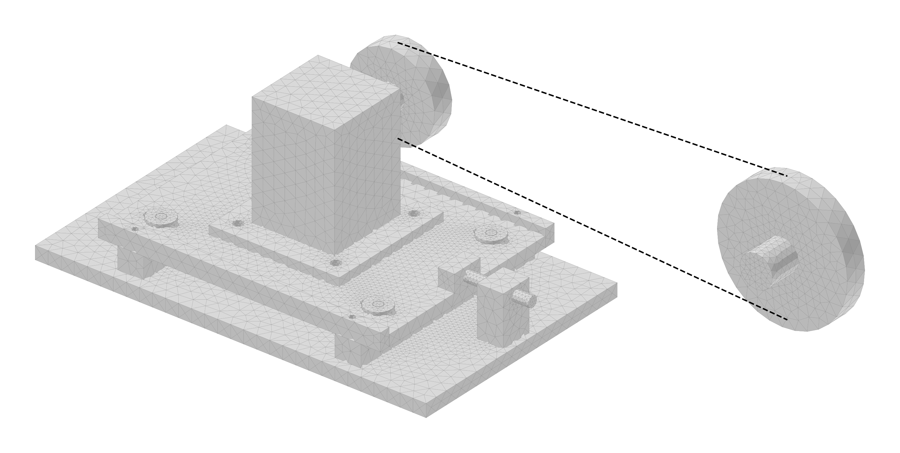
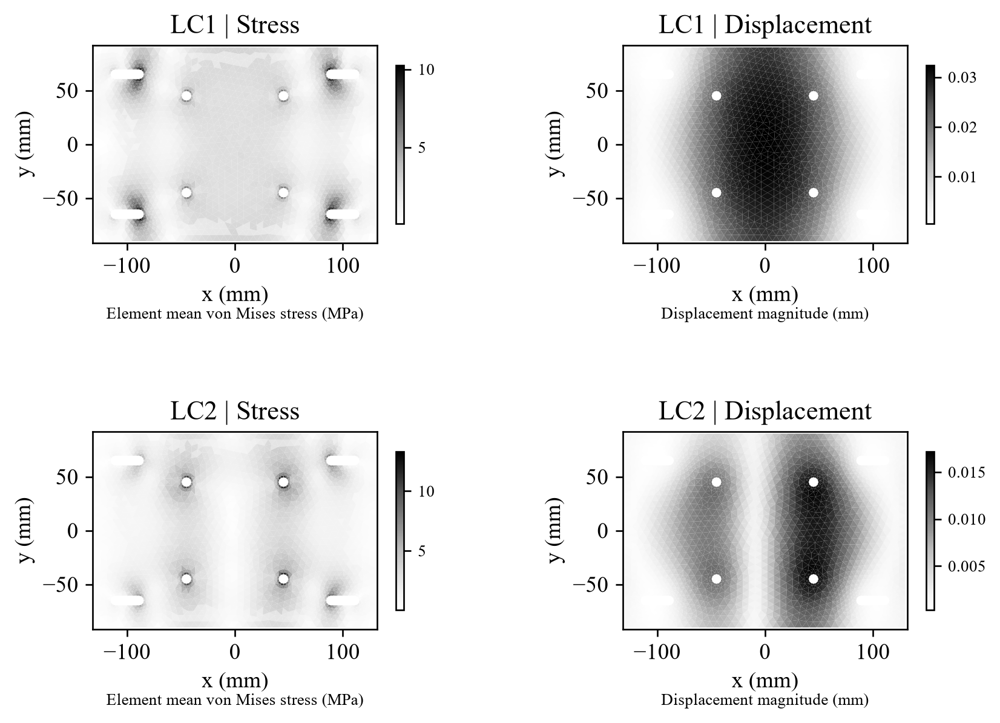
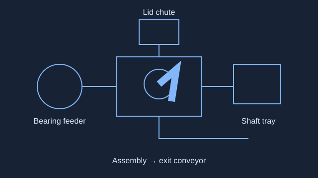
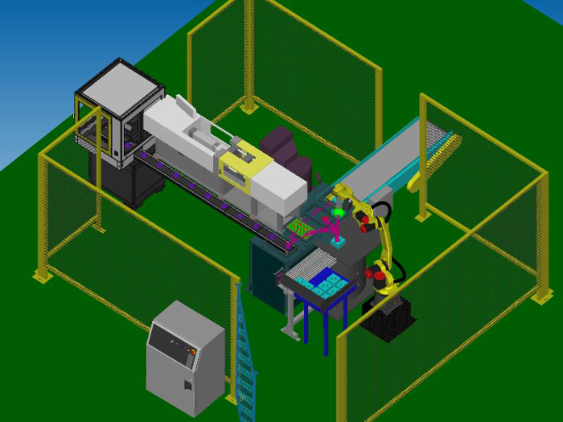
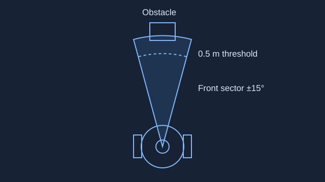
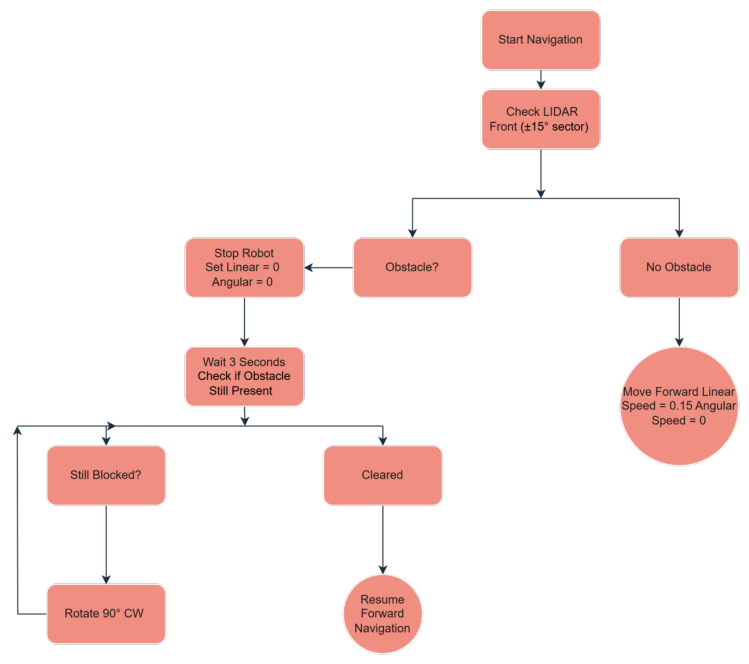
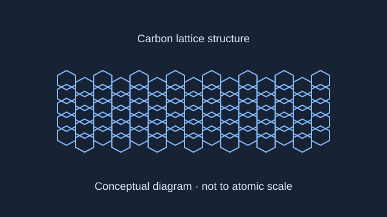

CAD & drawings
Part and assembly modelling, detailed drawings and revision control, with GD&T that a machinist can build from.
SolidWorksCreoAutoCADGD&T
Open to mechanical design, manufacturing & simulation roles
I’m Jagadeesh Lanka. I turn mechanical problems into designs you can inspect, test and improve.
MEng student at the University of Cincinnati, with experience in mechanical design, robotics and technical AI evaluation.

22 simplified STEP solids. Original proportions and placements.
Belt speed is illustrative. Tension travel slides the plate, motor and drive pulley left from the modelled position and redraws the belt on its pitch envelope.
THE TOOLKIT
Part and assembly modelling, detailed drawings and revision control, with GD&T that a machinist can build from.
FEA, beam screens and tolerance stacks, with the assumptions written down.
Design for manufacture, fabrication drawings, bills of materials and prototype support.
Python and ROS 2 for sensing and control; robot work-cell layout and part feeding.
Authoring testable engineering tasks, rubrics and reference solutions; reviewing model reasoning.
MEng, University of Cincinnati (Dec 2026). BTech, NIT Manipur. CAPM certified.
SELECTED WORK / 01
Design and Validation of a Modular Servo Motor Mounting and Belt Tensioning Assembly
Internship: May 18 to August 3, 2026Limited motor adjustment made belt installation and pulley alignment difficult. The design needed controlled travel, enough plate stiffness and a clear way to check alignment.
I revised CAD models, prepared drawings and calculations, checked fit and interference, applied review feedback and documented changes. A colleague supported technical reviews; my manager provided requirements and guidance.
A slotted 6061-T6 motor plate moves along guides. A right-side screw pushes the plate to increase pulley spacing, and clamp screws lock the setting. The report connects geometry, load paths, tolerances and inspection.
Predicted deflection for a 10 mm plate, against a 0.25 mm limit.
Original beam calculation with its stated screening multiplier.
No positive-volume interference across the checked travel and hub combinations.
FROM A CALCULATION TO A REVIEWABLE DESIGN
The report extension predicts 0.032545 mm displacement in LC1 and 0.017358 mm in LC2. These nominal-position solid models use four fixed clamp patches and distributed motor-foot loads. Their supports differ from the beam screen, so the results answer different questions.
The original worst-case alignment stack is ±0.28 mm against a ±0.20 mm target. The R1 design adds ±1 mm hub adjustment and an inspection budget. A physical alignment pass still needs to be measured.
View the five drawing sheets
The interactive model is tessellated directly from the R1 STEP assembly, with 22 simplified solids. The motor, pulleys, shafts and hardware use simplified envelopes. Blue lines show the belt pitch envelope, not a detailed belt. “Separate parts” is an explanatory view, not an installation sequence.
The reproducible CAD, added dimensions, detailed drawings, solid FEA and additional checks were developed for the September report extension with AI assistance. They are separate from the internship contributions and are not original company CAD or newly company-validated results. No machine-learning model was used in this assembly project.
These are calculation and model results. Manufacturing release would still need supplier-interface checks, belt and guard design, preload and thread verification, support and contact assessment, travel-end structural checks, fatigue assessment and measured alignment.
SELECTED WORK / 02–05
GSR ENGINEERING / 2024
A machine combining dry vacuuming and wet mopping. My work covered drivetrain sizing, fit checks, fabrication drawings, the bill of materials and prototype testing with senior engineers.
My BTech thesis also examined a chain and bevel gear drivetrain, free-body analysis, mechanical advantage and operating costs.
Explore an illustrative chain-drive ratio.
TWO-PERSON DESIGN PROJECT / DECEMBER 2024

A report-based reconstruction of the part flow. Select a station to explore.
Approximate explanatory layout with an animated part-flow sequence. Not original CAD, a robot reach study or a cycle-time simulation.
The team designed a work cell to assemble a base, bearing, stepped shaft and lid, using a FANUC M10iD/12 and an OnRobot RG2-FT gripper.
I designed the part-feeding approach, selected sensors and prepared the robot-motion flowchart. I also helped with the presentation and assembly animation. My teammate led the overall layout, robot selection and ROBOGUIDE cycle-time analysis.
A vibratory feeder presents bearings, a slotted tray locates shafts and a gravity chute supplies lids. Presence and alignment checks connect part delivery to the assembly sequence.
The report estimates about 9.6 seconds per assembly. This is a design-stage estimate, not measured production throughput.

FOUR-PERSON ROBOTICS PROJECT / 2025

Path clear: the report's controller commands 0.15 m/s forward motion.
Approximate robot geometry, drawn larger than floor scale. Idealised threshold demonstration, not a sensor simulation.
I contributed to a ROS 2 and Python project that used LiDAR input for reactive obstacle avoidance on TurtleBot3.
Check the front ±15° sector. If an obstacle is closer than 0.5 m, stop, wait three seconds, then turn 90° clockwise if it remains. Check again before moving forward.
Gazebo showed the intended behaviour. Hardware tests exposed missed detections, false positives and unstable avoidance. The report does not establish reliable handling of moving obstacles.
The lesson: a working state machine still depends on sensor quality and physical testing.

FOUR-PERSON LITERATURE REVIEW / 2024

A single carbon lattice wrapped into a tube. The model explains structure, not material performance.
Conceptual scientific diagram. Not to atomic scale; no molecular or material simulation.
I co-authored a review of nanotechnology in aerospace with Cole Rutter, Brice Hall and Josh Augustine.
Carbon nanotube wiring and shielding, self-healing materials, surface riblets, nanosensors and lightweight structures. The 3D diagram explains the single-wall and multi-wall nanotube structures discussed in the report.
The work compares published ideas and their possible applications. Reported weight, drag and service-life improvements belong to the cited literature, not experiments performed by our team.
This project developed my ability to connect materials research with manufacturing and aerospace requirements.
EXPERIENCE
Zouka Solutions · Remote
CAD revisions, engineering drawings, fit checks and technical documentation with team review.
UPRISE · University of Cincinnati
Literature review, structured research tracking and analytical reports for an NSF-funded research team.
GSR Engineering
Floor scrubber drivetrain design, fabrication documentation and prototype support.
ONGC
Exposure to gas compression capacity control, compressor lubrication, and trip and alarm settings.
TECHNICAL AI / CONTRACT PROJECTS
Alongside mechanical design, I author technical evaluation tasks and review AI responses. This work spans mechanical reasoning, advanced STEM, software, structured data and source-based research.
I currently work as a reviewer with Mercor. My authoring work includes Insight, Neutron Mechanical Engineering, Artemis and Planck, alongside the projects below.
I review technical AI evaluations against rubric requirements, annotations and test evidence. My feedback separates supported faults from uncertain detector warnings and makes the required corrections clear.
Open this project to explore an illustrative interactive example.
I review AI responses for useful personalization, memory relevance and overall quality. I check that highlights, rationales and scores agree with the evidence, and distinguish issues that need revision from smaller coaching points.
Open this project to explore an illustrative interactive example.
I compare model responses using evidence from each run, review the follow-up interactions and revise ratings after feedback. Careful record keeping preserves the connection between judgments, trajectories and supporting attachments.
Open this project to explore an illustrative interactive example.
I developed image-grounded mechanical reasoning evaluations involving planetary transmissions, clutch friction and heat. Reference work checked slip and stick transitions, holding capacity and plausible error paths. Scientific-QC revisions were tied back to the exact problem evidence.
Open this project to explore an illustrative interactive example.
I worked as an author on tasks connecting toleranced engineering drawings with reference CAD geometry and explicit evaluation criteria. The workflow brings drawing interpretation and dimensional reasoning into model assessment.
Open this project to explore an illustrative interactive example.
I worked as an author on terminal-based scientific tasks. The workflow connects clear problem statements, expected outputs, reference solutions and independent grading, with attention to genuine reasoning failures and task validity.
Open this project to explore an illustrative interactive example.
I worked as an author on research tasks requiring answers traceable to specific documents, pages or cells. Source evidence and a clear reasoning chain support the expected answer.
Open this project to explore an illustrative interactive example.
I authored advanced physics tasks with worked reference answers and explicit reasoning criteria. The work included checking signs and complex conjugation in quantum and condensed-matter reasoning, supported by mathematical verification and scientific references.
Open this project to explore an illustrative interactive example.
I developed research questions using archival maps, tables and logbooks. I verified exact answers against the sources and adjusted task difficulty after reviewing how models retrieved and combined the evidence.
Open this project to explore an illustrative interactive example.
I developed multi-file root-cause analysis tasks with answer keys and verification packages. The work connected quantitative causal checks, model-result review and reproducible handoffs.
Open this project to explore an illustrative interactive example.
I worked on a CDC data-processing benchmark with a reference solution and independent tests. Evaluation covered checkpoint and replay behaviour, dependency-edge semantics and execution-environment checks. This describes completed historical work; the original working source was later cleaned up.
Open this project to explore an illustrative interactive example.
I built playable games in Defold, Panda3D and Godot. My work also included task and environment specifications, asset integration, objective rubrics and QA. The wider workflow covered Solar2D as well, with tasks defining controls, game states, win/loss and restart behaviour and revisions after review.
Open this project to explore an illustrative interactive example.
OUTLIER / OPENCLAW AGENT BUILDING
I built an agent in OpenClaw as part of my Outlier work. The work covered environment setup, task specifications and evaluation. I used rubrics and reference trajectories to review tool use, privacy boundaries and failure types.
Explore an illustrative local agent workflow.
PERSONAL PROJECT / INDEPENDENT EXPLORATION
WINDOWS VOICE ASSISTANTA personal experiment in making the computer respond naturally.
I built AUREN as an AI-assisted Windows voice-assistant prototype. A Python controller, SQLite memory and a web interface bring voice input, local command routing and spoken replies together.
It can route requests such as reporting the time and opening or focusing Codex. Requests to remove data go through a confirmation check. This is my personal project, separate from my contracted AI evaluation work.
Choose a sample. Step through what happens.
Explore an illustrative voice-command workflow.
ABOUT ME
I’m completing my Master of Engineering in Mechanical Engineering at the University of Cincinnati. I’m interested in manufacturing, mechanical design and simulation roles, including opportunities that combine mechanical engineering with AI.
MEng, Mechanical Engineering · Expected December 2026
BTech, Mechanical Engineering · 2024
NEXT STEP
Hiring for mechanical design, manufacturing or simulation? I’d love to talk.